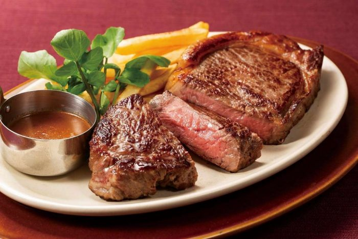
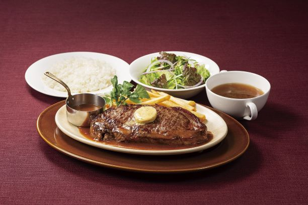
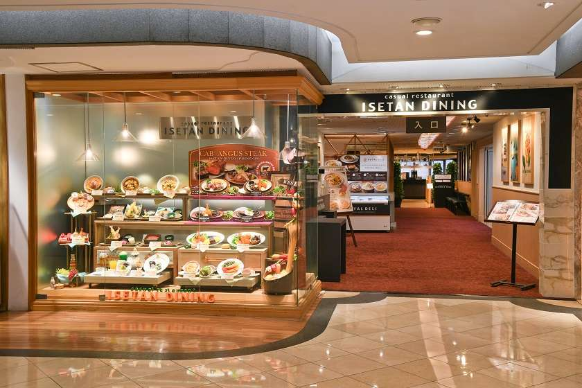
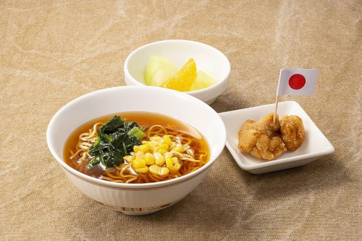
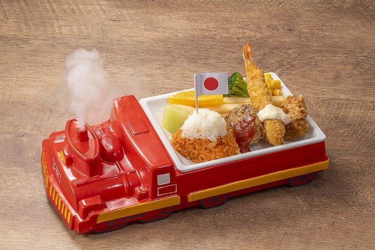
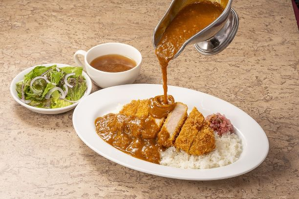
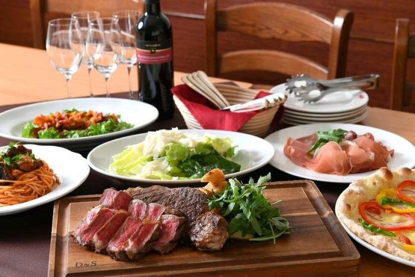
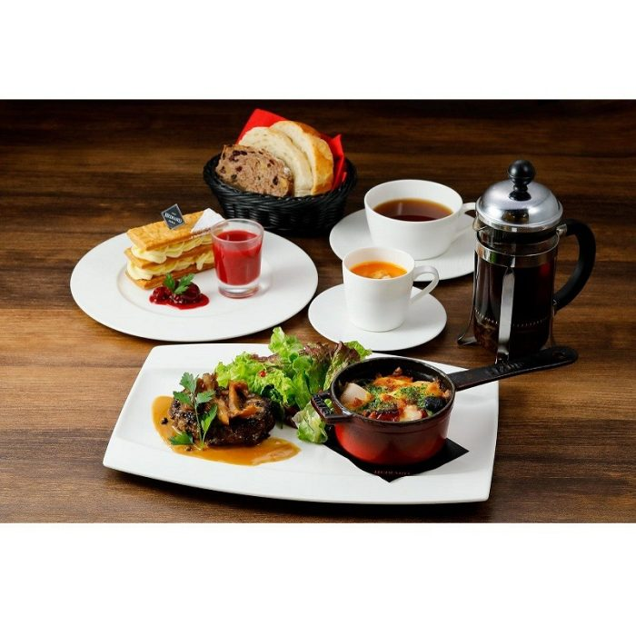
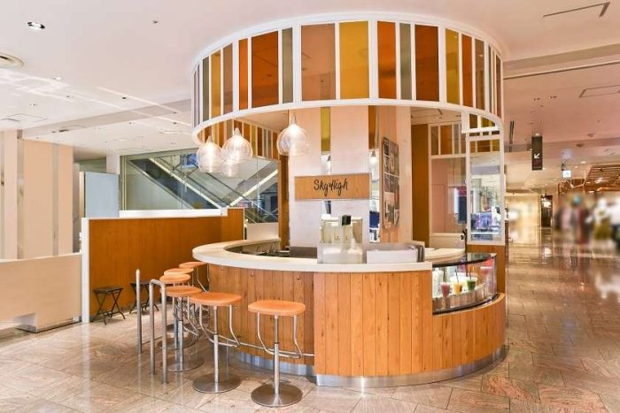
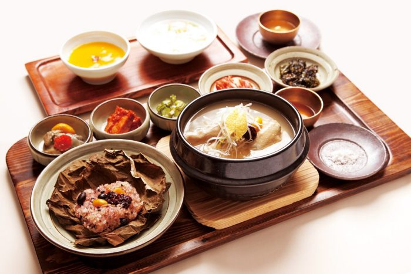

Galerie photos










Kevin, Loïc, May Nhia, Stéphanie, Estelle
Du 5 Avril au 27 Avril 2026
Grand espace restauration de l Isetan Shinjuku, utile si vous voulez un repere simple, central et couvert avec plusieurs styles de cuisine.










Isetan Dining n est pas un seul restaurant mais un repere restauration pratique au 7e etage, utile si vous voulez de la flexibilite a Shinjuku sans chercher longtemps.
Repere prix base sur un visuel officiel observe le 11/03/2026 ; Isetan Dining regroupe plusieurs enseignes.